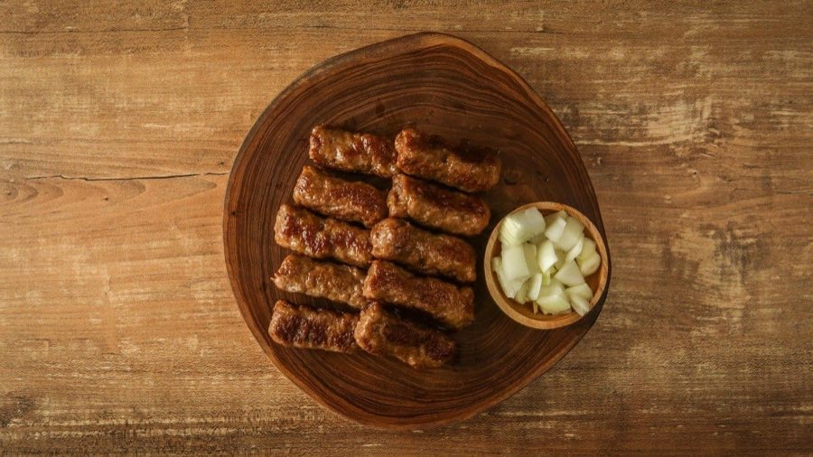
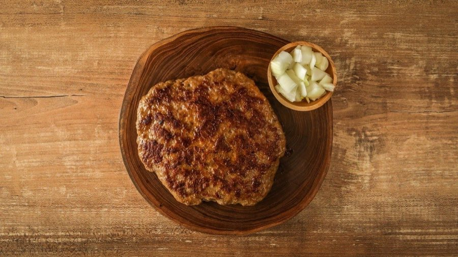
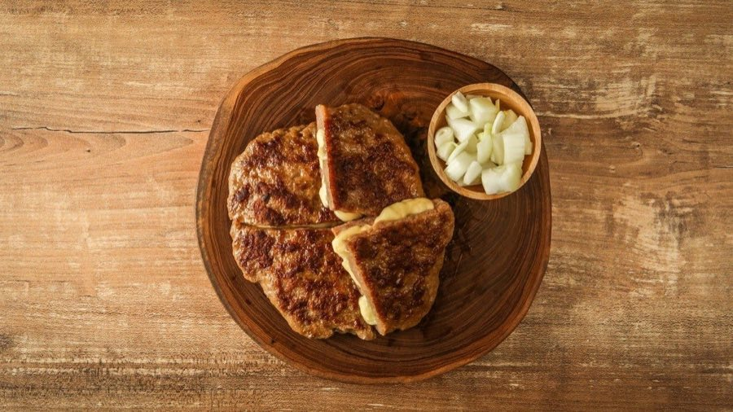
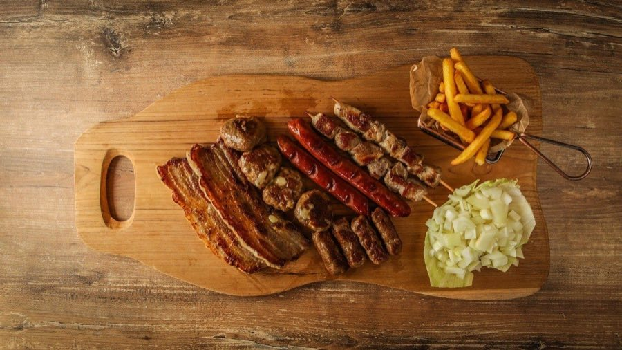
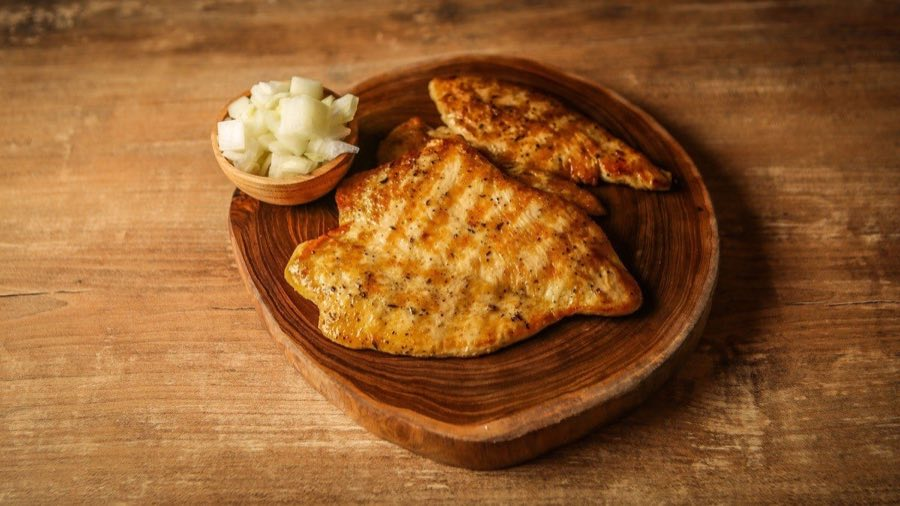
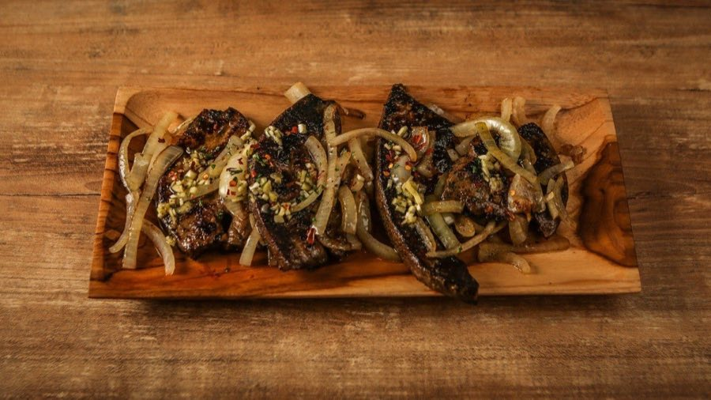
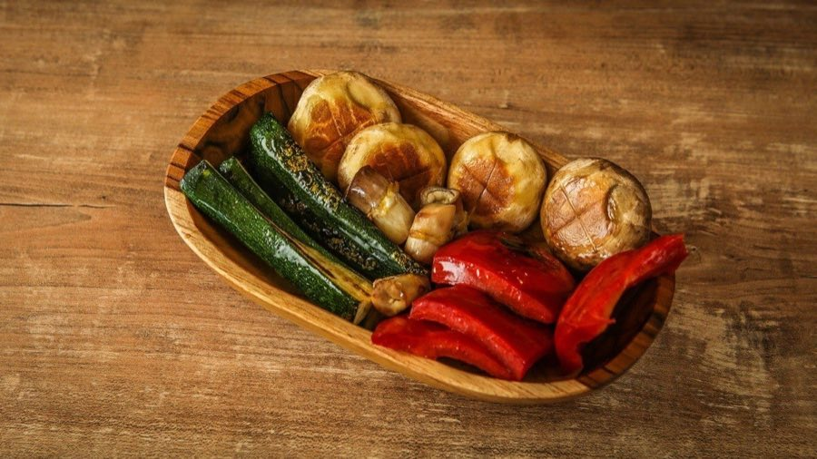
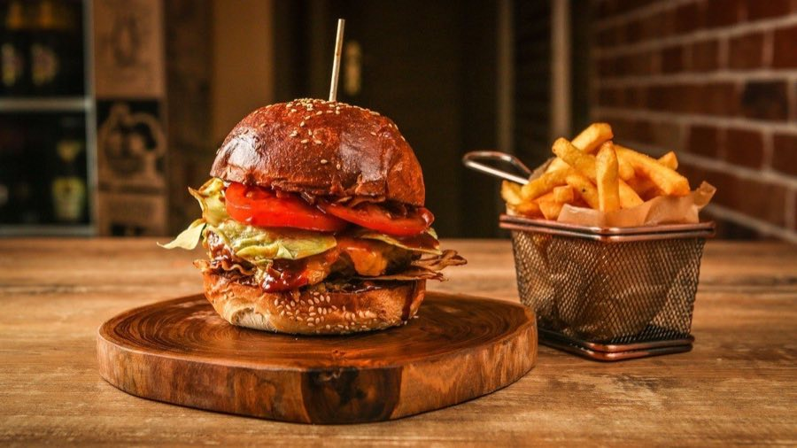

Ćevapi veliki
Mljevena junetina.
porcija9,00 €
01 Roštilj — Avenija Dubrava 37, Zagreb
Sočna pljeskavica, hvaljeni ćevapi od mljevene junetine ili pileći file sa žara za one koji paze na kalorije. U Dubravi, od podneva do pola deset navečer.

02 S roštilja
Ćevapi, pljeskavice i šiš ćevapi od mljevene junetine, uštipci, suđuk i carsko meso. Uz svako jelo s roštilja možete odabrati prilog, salatu i piće.
Mljevena junetina.

Mljevena junetina, kajmak.

Mljevena junetina sa začinima.

Mljevena junetina.

Mljevena junetina, sir.

Mljevena junetina sa začinima.

Mljeveno meso.

Mljeveno meso, kajmak, lepinja.

03 Za dvoje
30,00 €/ plata
2× ćevap, 2× uštipak, carsko meso, ražnjić, suđuk, pommes frites, tzatziki umak.
04 Piletina i povrće
Pileći file za one koji paze na kalorije.
Na istom žaru peku se i piletina i povrće, a uz jela s roštilja možete odabrati i salatu.

Pileći file sa žara

Sa žara

S češnjakom i lukom

Prilog

Salata

Dip od ajvara i sira, salata, rajčica, pohani luk, cheddar, pommes frites.

BBQ umak, salata, rajčica, panceta, pohani luk, cheddar, pommes frites.

Hambi umak, salata, rajčica, cheddar, pommes frites.

Hambi umak, salata, rajčica, pommes frites.
06 Narudžba
Dostavu na kućnu adresu naručujete preko Wolta, uz prilog, salatu i piće po izboru.
Grill Palić na Woltu ↗07 Radno vrijeme i adresa
10040 Zagreb · 01 2987 156
Grill Palić · Av. Dubrava 37| Ponedjeljak | 12:00 – 21:30 |
| Utorak | 12:00 – 21:30 |
| Srijeda | 12:00 – 21:30 |
| Četvrtak | zatvoreno |
| Petak | 12:00 – 21:30 |
| Subota | 12:00 – 21:30 |
| Nedjelja | 12:00 – 21:30 |
12:00 – 21:30
08 Pitanja
Ćevapi, pljeskavica i šiš ćevapi rade se od mljevene junetine. Uštipci i mazalice su od mljevenog mesa, a suđuk je suha začinjena kobasica od mljevenog mesa.
Da, dostavu naručujete preko Wolta (Grill Palić, Zagreb). Za sve ostalo nazovite 01 2987 156.
Ne. Radimo ponedjeljak, utorak, srijeda, petak, subota i nedjelja od 12:00 do 21:30, a četvrtkom je zatvoreno.
Pileći file sa žara, pileći batak i zabatak, povrće na žaru te šopska, miješana, zelena i kupus salata.